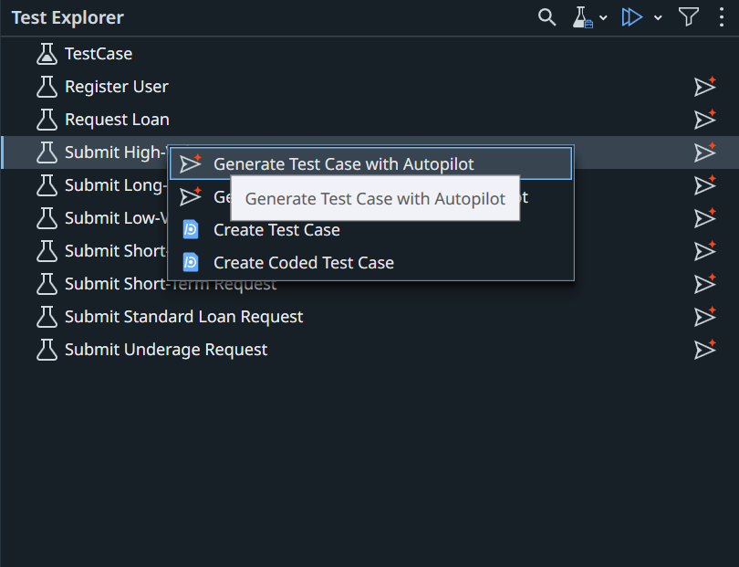

6. Automate and Publish the Test Cases¶
Turn your manual test cases into automations with Autopilot for Testers in Studio, then publish them with Delegate. Each automation stays linked to its test case in Test Manager.
Before you start
✅ Your Studio project is linked to Test Manager, and the UiPath Banking App Object Repository is built, from 5. Set Up Studio and Build the Object Repository.
What you'll do¶
You switch between two tools on this page. Each step is labelled with the one it uses:
| Tool | What you do |
|---|---|
| Studio Desktop | Work in Studio Desktop yourself, with Autopilot for Testers |
| Delegate | Paste the prompt in Delegate, then wait and watch it work in Studio |
Click a step to jump to it.
Automate the test cases with Studio Desktop¶
Studio Desktop
Automate every test case you chose in 3. Generate Test Cases, 3 or more. In 7. Add Test Cases to the Smoke Test Set, you add them to UiBank Smoke Test Set, which runs them in 8. Run, Triage, and Report.
-
In Test Explorer, right-click one of these test cases → Generate Test Case with Autopilot.

-
Review it like a pull request.
Review checklist
✅ One verification for the expected result
✅ Object Repository elements only
✅ No fixed Delay activities
✅ No empty or extra activities
If something's off, ask Delegate to fix it, or fix it yourself.
Best practice: structure each test case in Given / When / Then sections.
-
Check the Use Application/Browser cards. Each test run should open a fresh instance of the app and close it at the end, so runs don't affect each other. This includes each data row in the next section. Your requirement and test case may not say so.
✅ First card: set Open to Always.
✅ Last card: set Close to Always.
✅ Cards in between: keep Open and Close as Never.
Select a card, then set Open and Close under Properties → Options. Here, the first card opens the app and leaves it open:

-
Run it locally.
- Repeat steps 1–4 for each of your other chosen test cases, so all 3 or more are automated with Autopilot.
Check it: each test case passes locally.
Optional: Fix the activity display names
Autopilot names each activity after its manual step, including the test data, which makes long, hard-to-read display names.
-
Replace Submit Short-Term Request with the name of the test case you generated, then paste in Delegate:
I've created test case Submit Short-Term Request using autopilot feature in Studio. Fix the Display names. Provide appropriate names. -
Reload the test case in Studio and check the new names.
Attach test data¶
Studio Desktop
Next, you attach test data to one of the test cases you automated, so it runs once for each set of values in the UiBankTestData entity.
One row expects the loan to be rejected, but UiBank approves it, so this test case fails. Leave it failing: in 8. Run, Triage, and Report, you find out whether the problem is in UiBank or in the test.
- In Test Explorer, right-click one of your automated test cases, and select Add Test Data.
- Choose Data Service, and link the UiBankTestData entity.
- Map the workflow arguments to the entity fields.
- Add a Verify activity to compare the actual outcome with ExpectedOutcome.
- Run the test case and check that it runs once for each data variation, and fails on the row with ExpectedOutcome set to FALSE.
Publish the test cases¶
Delegate
Switch back to Delegate
Your test cases are automated. Go back to Delegate to publish them.
Replace <TEST_CASE_1>, <TEST_CASE_2>, <TEST_CASE_3> with the names of the test cases you automated (add more if you have them), then paste:
Set the test cases I generated with Autopilot in <YOUR_NAME>_UiBank Tests (<TEST_CASE_1>, <TEST_CASE_2>, <TEST_CASE_3>) as publishable, and publish the project to the Orchestrator Tenant Processes Feed, not my Personal Workspace.
Do it by hand in Studio
-
In the Project panel, right-click each automated test case → Set as Publishable.

-
Select Publish in the Studio ribbon.

-
In Publish Test Cases, check the Package Name and New Version, then select Next.

-
In Publish options, choose the Orchestrator Tenant Processes Feed, then select Publish.
Check it: in Test Manager, open Test Cases. Each one you automated shows as Automated. Open one and check that its Automation tab shows your package, named after your project.
Don't continue until every test case you chose is automated
The test set runs only automated test cases. A test case you chose that isn't linked to your automation is left out of the run and the report.
Replace <TEST_CASE_1>, <TEST_CASE_2>, <TEST_CASE_3> as before, then paste in Delegate:
For each of these test cases in my Test Manager project: <TEST_CASE_1>, <TEST_CASE_2>, <TEST_CASE_3>, tell me whether it's linked to a Studio project named '<YOUR_NAME>_UiBank Tests'. List the ones that aren't.
Automate any test case on that list, publish again, then ask again. Continue only when the list is empty.
Automated in Studio, but still not linked?
Ask Delegate to link it:
Link the automation <STUDIO_TEST_CASE> in my <YOUR_NAME>_UiBank Tests package to test case <TEST_CASE_KEY> in my Test Manager project.
Or, in Test Manager, open the test case → Automation tab → Select Automation.
Nice work!¶
Your test cases are automated, data-driven, and published, ready to run from Test Manager.
Next → 07. Add Test Cases to the Smoke Test Set